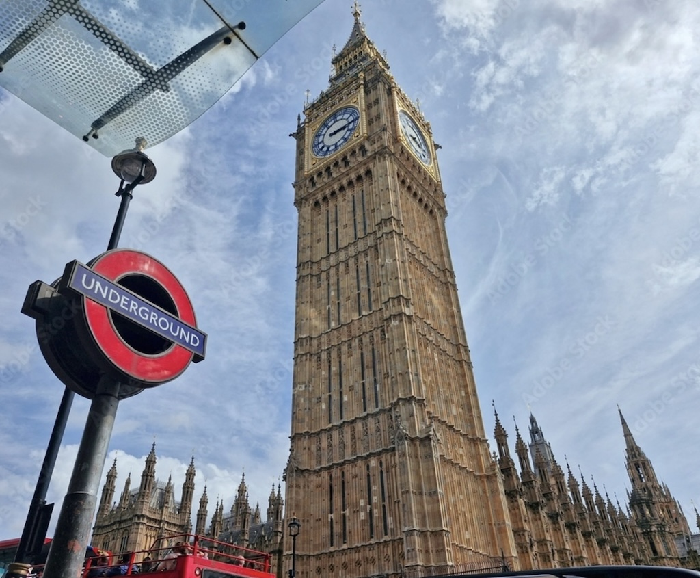
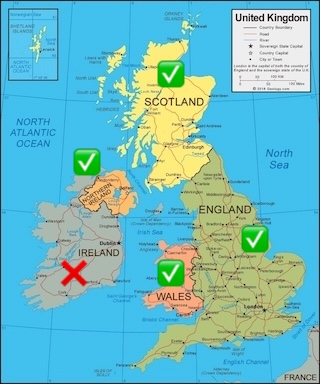
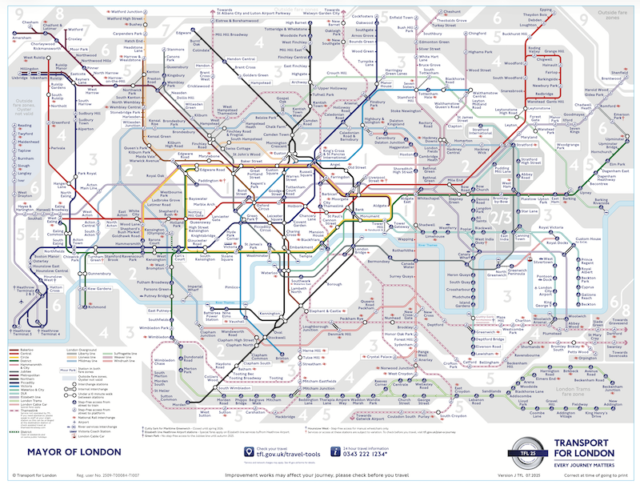
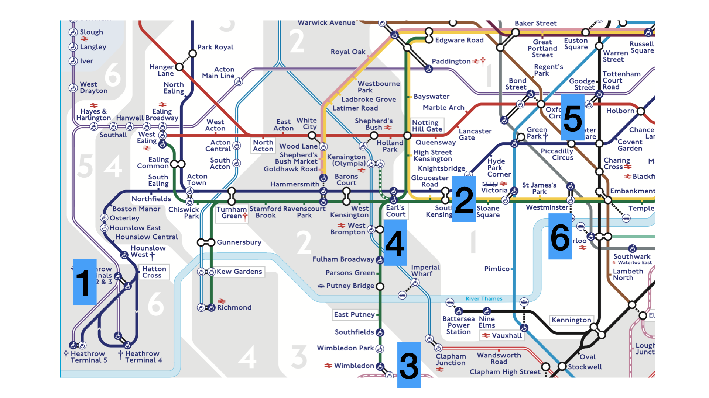
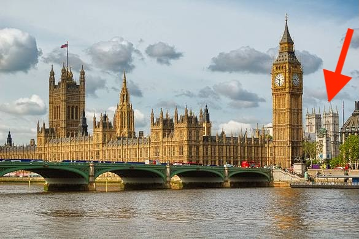
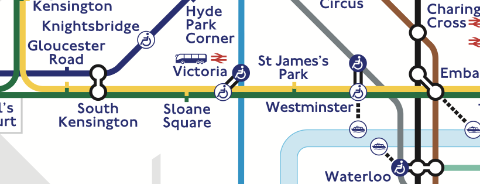
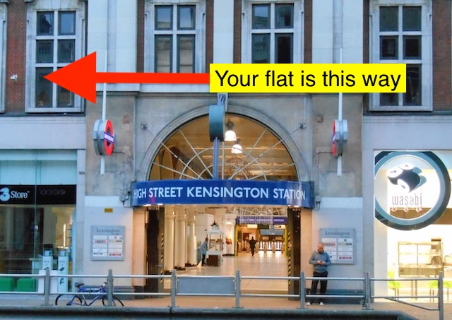

Updates, reminders, travel tips, and London-y things for our Cal Poly summer program.
4-May-2026
It's May. That means saying "We'll be in London next month" is a true statement!! (Personally, I'm getting veeery excited about our trip!)🤩
We'll have an in-person pre-departure meeting on Thursday, May 14th, from 11:10-12 in 35-104 (Kennedy Library). This is one week from this Thursday.
A few supplies for my class (ASTR-324):
Sketchbook or equivalent. No larger than A3 in size.
Some sketching pencils. No big kit needed. Keep it small; you only need one or two pencils.
Two books (get Kindle/e-reader versions if possible). All devices (laptops, phones, etc.) have a Kindle app.
This book. Would be good if you can read it by the time we get there. (OK to read it there though.)
And this book (Explains the science of our class, the other book leaves out.)
Optional (but if you're so motivated), please read this Much Ado... or watch this or this (1 min long), PLEEEEEEEZE, at least familiarize yourself somewhat with the Much Ado... plot. I know, I know, it's not your major (it's not mine either), but prepare anyway! I am!
For your other class, ISLA-316, I am not sure what it will entail (other than the 5-week, M/T/W schedule posted below, 24-April). I expect you'll hear from your instructor, Dr. Elizabeth Cooper soon.
The official volunteer opportunities (including sign-ups) should be available from FIE by June 1st or so.
Smart Traveler Enrollment Program. A good idea to enroll in this before departing (FIE or the International Center may require this anyway).
There has been a post or two on the #general channel on our Slack. Weigh in if you want!
In a previous post, I mentioned that you can find Banksy art in and around London. He/She/They (?) have been active recently:
As you may know, the UK has a king, but elected leaders actually run the government. This system is called a constitutional monarchy. King Charles III, however, visited the U.S. just lasr week and addressed Congress:
Bensky's take: To me, King Charles (formerly Prince Charles) has been the representative of the UK for as long as I can remember. I recall watching his marriage to Lady Diana Spencer with my grandmother while visiting her in Germany ages ago, and I also remember Diana’s fatal car accident in Paris, which occurred when I was in graduate school. Charles’s bloodline goes back over 1,000 years, to early medieval rulers such as William the Conqueror (1066) and even earlier Anglo-Saxon kings. He seems to me to be a well-meaning and considerate person, with a long-standing commitment to sustainability and social causes.
More (sorry--I don't know how or why I know this stuff!): About a 10 min walk from FIE's main building on Cromwell Road is a HUGE seven-floor department store called Harrods. A person named Dodi Fayed was the son of the former owner of Harrods. So? Well, Diana and Dodi were in a romantic relationship, and both killed in the Paris car accident I mentioned above. (Side note: Harrods has awesome air conditioning on those hot London summer days.)
24-April-2026
Community Engagement in London (the work in London and leadership program). FIE has enrolled you all into two leadership workshops on this, taught by London-based instructor Dr. Rebecca Pollack (of FIE). They are scheduled for Mon 22nd June and Wed 29th July from 10.00–12.00 (beginning and near end of the program). So our class schedule has become:
ASTR-324 T/TH 9:10am–12:20pm, for 6 weeks
ISLA-316 M/T/W 2:10pm–4:25pm, for 5 weeks
Leadership workshop Mon June 22 10-12
Leadership workshop Wed July 29 10-12
+ a few TBA class related day trips and activities (stay tuned)
Academics. I am hard at work planning our 6-weeks of academics. Here is a DRAFT SCHEDULE. It's subject to change and very preliminary, but should give you an approximate look at our 6-week program.
Transcripts. You may be getting emails from FIE about needing your transcripts. Please send them in. Cal Poly, FIE, or the International Center DOES NOT do this for you. Thank you!
Slack. I think all of you have joined our Slack. If not, please click here to join. We'll make it all more of a priority to check and use Slack as our trip approaches (and especially while we're there--I'd like you all to install the Slack app on your phone and get its notifications), but for now, please feel free to connect with other London 2026ers if you wish.
Your safety A few things to think about concerning your health and safety (Dr. Bensky just completed a 'study abroad coordinator' training program).
#1 thing to remember: We won't be at home anymore. Things you expect to happen at home may not happen abroad. Yes, it's an English speaking country, but the culture there is markedly different than ours.
📚 Being a student
Keep in mind that when on this program, we're all representing Cal Poly. This means we're bound to the usual responsibilities as if we were on campus (see here).
💷 Pickpockets
London (sidewalks, tube cars, buses, etc.) will get very crowded, which is perfect for pickpockets. Keep your phones, credit cards, etc. in front (zipped) pockets or zipped bags. Things like this can be helpful. This will not work so well:
🍻 Alcohol
It's OK not to drink.
In England, the culture around "the pub" is a social cornerstone, but the legal and social rules differ from the U.S.
The Legal Age is 18: Unlike the U.S., students are legally allowed to buy and consume alcohol. However, many bars and clubs have a "Challenge 25" policy—if you look under 25, you must show a physical ID (a passport is the most reliable for international students).
Drink Spiking: This is a serious concern in major cities. Rule: Never leave a drink unattended, even for a moment. Tip: If you’re at a club, use a "Spikey" (a plastic stopper) or keep your hand over the top of your bottle/glass.
🚫 Drugs
The UK has a very zero-tolerance approach to drugs for international visitors.
Strict Classification: Drugs are categorized as Class A (Cocaine, MDMA, LSD), Class B (Cannabis, Ketamine), and Class C.
The Risk: Possession of even small amounts of Class B drugs (like Cannabis) can lead to arrest and immediate deportation. In the UK, "medical" marijuana cards from the U.S. are not recognized.
Nitrous Oxide: Commonly seen in "balloons" in London nightlife, this was recently made illegal (Class C). Possession can lead to a criminal record.
📱 Social (dating) apps
The "First Date" Rule: Always meet in a highly public, well-lit place (like a busy café or pub). Never go directly to someone's flat or invite them to your housing on the first meeting.
Share Your Location: Before heading out, students should send their "Live Location" (via WhatsApp or Find My) to at least one other person in the study abroad group.
"Ask for Angela": This is a safety initiative across the UK. If a student is on a date and feels unsafe or uncomfortable, they can go to the bar and "Ask for Angela." The staff will understand they need help getting out of the situation discreetly (e.g., calling a taxi or providing a safe exit).
🏴 Key Safety Essentials
Emergency Number: Dial 999 for emergencies (Police/Ambulance). Dial 101 for non-emergencies.
Transport: The "Tube" (subway) stops running around midnight on most lines (except the Night Tube on Fridays/Saturdays).
Stay in "Pods": Encourage students to use the "buddy system" when out at night. No one should ever head home alone after a night of drinking.
The Tube (or Underground—but not the “subway”). It can be a bit of a sensory game. Why? Well, it’s all underground, so as you travel there’s not much to see out the windows, and there’s really no indication of which direction you’re going.
So when you climb back up to street level at your destination, what you see can sometimes be a surprise. A big one for me is getting off at the Westminster stop and emerging onto the street. This is what you’ll see: the “Great Clock of Westminster” (or the “Elizabeth Tower”—but not “Big Ben”)—and it is HUGE!! (And of course the Thames is right there. Ahhh London!)

07-April-2026: 71 days until we'll be in London!😀
Congratulations again to our Summer 2026/London group. The enrollment settled down to 22 students, which is a perfect size for our program. A few things:
A few of you have emailed me about this: YES! Buy your plane tickets! Plan on landing in London on Thursday June 18th (their local time). At the end, check out time for your flat is Saturday August 1st around noon.
Visitors (parents, friends, etc.): You'll be pretty busy during the week (Mon-Thurs), so please limit your time with visitors to Fri/Sat/Sun. They generally cannot tag along with our excursions and definitely cannot stay with you in your flat (FIE rules). Please also don't plan on missing any class or activities on their behalf. You'll be busy on some evenings (during the week) with activities too. It may be best to connect with visitors at the end of the program (July 31st and onward).
FIE is organizing an optional work in London and leadership component to our program, which is coming along nicely. I'd like you ALL to consider participating.
I'll make a more formal announcement about this soon, but in addition to two leadership workshops (offered by an FIE-based professor), you can earn something called a Vinspired Certificate for volunteering for at least 10 hours with a London-based community organization such as:
The Felix Project (distribute food to charities)
FoodCycle (cook and share meals using surplus food)
City Harvest London
Refugee Community Kitchen
The Conservation Volunteers
Thames21
The Little Village (clothes for young children in need)
And many others (including some self-paced local research projects).
The Vinspired certificate would be a great résumé item for you upon return and a chance to network with native Londoners. Imagine YOU, getting on the tube and going off to 'work' in London!
Rain: We'll all be out and about quite a bit and when the sky is grey it can suddenly start pouring for 10 min. But this doesn't stop anything from going on. Just be prepared maybe with an umbrella or a rain jacket. I don't always do this, but going out with a small backpack (with a water bottle and perhaps rain gear) is not a bad idea. (It also helps if you pick up groceries, etc. on your way back to your flat.) I've definitely gone out thinking "nahh..it won't rain." (Then it does of course.) London (and England) is very lush and green everywhere (because of the rain).
Walking. In California we're used to having our own cars to get around. In London, we'll go six weeks with no car at all. Prepare to do a lot of walking during this trip! Examples: 15 min. walk from your flat to the FIE classroom. Kensington High Street tube stop to your flat: 15 min. Lots of other walking between tube lines and street level destinations. Sometimes walking from one tube line to another to continue your trip can require a lot of walking. Walking to stores to get food and groceries (and carrying what you buy back with you).
First arrival: Heathrow Airport to your flat. You can Uber, but: Why not try the Tube? (London street traffic is rough.) The Piccadilly line is the only one that serves Heathrow Airport. Get on the one to "Central London" (or Cockfosters) right at the airport. You can take it straight to the Gloucester stop (about 50 min), then get out and walk 0.7 miles to your flat. (Yes! Pulling your suitcase the whole way!)
We don't just drop into London and build this program from scratch. We are hosted by a company called the "Foundation for International Education" or (FIE). They provide us with housing, classroom space, WiFi, etc. They also offer all kinds of services and dedicated staff like student life experts, counselors, etc. Any service Cal Poly offers while on campus in SLO, FIE offers to us in London. The building they have that we'll meet in with classroom space is called the "Foundation House." It's at 114 Cromwell Road, about a 15 min walk from your flat at Hyde Park Gate.
11-March-2026
Hey! Congratulations on being accepted to the London program! About 30 of you (Cal Poly students) are signed up, which is awesome!
I am deep into the planning stages of our program (working with my liaison in London) and have some really fun things planned for our ASTR-324 class. I promise you'll enjoy the credit you'll earn in this class.
This will be a great fast and easy communication mode while in London ("meet at Trafalgar Square," "oh no, it's raining!", etc.)
You can use it now to connect with and meet others in the program (including Prof. Bensky--ask any question you have!)
Class Schedule. This could change, but at the moment, classes are scheduled as:
ASTR-324 T/TH 9:10am–12:20pm, for 6 weeks
ISLA-316 M/T/W 2:10pm–4:25pm, for 5 weeks
Class supplies (books, etc.) are forthcoming.
The long duration of the classes allows us time to go out and about in London for class. We'll never be in the classroom the whole scheduled time of a class.
A "pre-departure" meeting will be scheduled for sometime in May (you'll hear about it).
England vs. the United Kingdom. Remember: United Kingdom = England + Scotland + Wales + Northern Ireland.

Was intrigued to see this: Mary Queen of Scots last letter. I might try to pop up to Scotland and see this some weekend we're there. (We'll "see" her on our tour of Westminster Abbey.)
Kind of a touching story: You probably all know this, but "mind the gap" comes from a gap between a tube car and the platform that can open up due to irregularities in construction at various stations. So you'll hear "mind the gap" announced a lot in the tube stations.
Do you know why you'll see these on some cross-walks?
Silly stuff
Be ready to buy a towel when you get there (not supplied by your housing). Kind of large to pack. Many places to get one near your flat. Can be your first errand!
Also (if needed) it's easier to buy a 220V hair dryer over there too, instead of lugging a 110V-to-220V transformer and your home hair dryer.
Your phone/laptop chargers all work directly on 220V in the UK. But the wall-plug is different. These and these can be helpful.
Packing: 1) Pack what you "need." 2) Get rid of 50% of it. 3) Go!
22-Jan-2026
Happy new year everyone. Hope you're all still thinking about going to London this summer. Here's a few updates on the program:
Applications are still open and will close around March 1st
I pulled the latest list, and it looks like about 8 of you have completed your applications. Awesome!🎉 I'd love to have many, many more of you complete yours as well! You have a little over a month before the applications close.
Short video
I made short promotional video about my class (ASTR-324) and being in London. This is supposed to get pushed out to the International Center's Instagram on the 29th. (I hope you like it!)
"London-y" Things
Just a few musing about London
If you like the graffiti artist Banksy (no, not me. I'm Bensky), you can go around London finding some of his/her (?) work. There are 4 or 5 "Banksies" in the city. It's kind of fun to go around and find them.
Even though they speak English there, there's plenty to learn about their language. Such as:
A "subway" is an under-a-road walkway. It does not refer to the "tube" or "underground" that London's famous transport mode.
You'll see a lot of "look left" signs as you cross streets. Do you know why?
A "boot" is the trunk of a car, and the "bin" is the trash. Restrooms are "water closets" (WCs), and if you need some medication, go the "chemist" (not pharmacist).
Sometimes, you'll be a little intimidated by Londoners' accents, and will have to listen a little closer when communicating. I've had students actually ask me to tell them what someone (with an accent) just said. Hey! It's just English!
Your personal space will shrink quite a bit everywhere you go. Everything is smaller (rooms, gyms, stores, etc.) and there are more people there.
This is an interesting explanation of today's English monarchy.
18-Dec-2025
🎉Hey everyone, good job finishing up fall quarter! Just a quick London update before you all disappear for a well-deserved break.
Applications open!
Applications for London/Summer 2026 are being accepted now. Click here and find the "Apply Now" button! (Still no rush--the deadline is in March.)
The London Tube
In London, the underground "subway" or just "underground" or "the tube" will be a big part of our lives. It's what quickly and efficiently will whisk us all over greater London. You'll get a free pass for Zones 1 and 2 (see the light gray shading on the map).
I put a full map of it here.

I quite enjoy getting used to the tube and trying to find my way without using the map at all (it'll take you a couple of weeks). It definitely provides a welcome break out of the California "drive everywhere" culture for 6 weeks. Here's some stops that will be key for us:

The blue Piccadilly line serves Heathrow Airport, where we'll all likely land. (It's a very old and deep (literally) line; citizens hid down there during the WWII bombings of the city). If you can, follow it eastward to Gloucester Rd (NOT pronounced "Gl-ow-ses-ter") which you can get off at and walk (20 min or so), to your flat. Don't worry about having your suitcase and all. Tons of people will be doing the same thing.
High Street Kensington is a good stop for your flat too, but you'll have to figure out how to be sure you get on the Circle or District lines (yellow and green) to get there. You can transfer at Gloucester but be sure get on the "Edgeware Rd" line. The lead car on a tube, or the platform you stand on to wait for the tube, is always marked by the end of the line it is travelling to.
Yes, "Wimbledon" on the green line is that Wimbledon. Yes, the tournament is on when we get there, and yes you can go. (Actually, if you want to go, you might look into getting tickets now.)
Earl's Court: that's my stop, which is near the faculty housing.
Go to Piccadilly Circus for theaters, shows, food, and tons of action. (Nearby Holborn is a good stop for the British Museum.)
Westminster if you want to go see this view (Westminster Abbey, Bensky's favorite place, kinda in the whole world is there too--red arrow):

The map vs reality
The tube is also fun because it doesn't physically exist like the map. All the map tells you is that say Sloane Square is right after South Kensington if you're on the green line (District line) to Upminster.

Geographically, it actually exists like this:
There's always that person...
Then there's this, WHICH YOU'RE NOT GOING TO DO!!!
Have a nice holiday everyone!
19-Nov-2025
Applications for London/Summer 2026 are now open!
There's nothing you need to do right now, but:
🎉You can apply for London/Summer 2026 here, by clicking the "Apply Now" button! 🎉
But again, you don't have to apply right now. This program is NOT first-come, first served and spaces are not be "used up" by early applicants. This is not a competitive program, so focus on finishing up this busy quarter and going home for the holidays!
Admissions to the program will not happen until applications close in March. If you apply at any time between now and March, and meet the minimum requirements (2.4 GPA, no academic probation, good standing with the university), you'll be admitted.
ALSO: On Friday (Nov 21), there's a virtual Study Abroad Workshop you can sign up for here.
Ok, back to being in London 🇬🇧
One thing I love about the lifestyle in London is all of the walking we all end up doing. (So bring some good walking shoes.) Sure there's the tube and the buses to get around the city, but all of the in-betweens are covered by walking. It is very different from the California "drive everywhere, parking lots, etc." culture.
One of my favorite things to do in London is to go out and walk in any direction, to investigate the city. When ready to go home, I just find a tube station and let "the underground" whisk me home. So, these walking trips only need to be "one way" (of walking).
In your case (living at Hyde Park Gate), you can start investigating by just heading across the street into Kensington Gardens and Hyde Park.
You can also turn due left out of your flat and head to "High Street Kensington" for the Whole Foods, shopping, and just a ton of activity. The Design Museum is around there too. Walking toward our classroom building and Cromwell Road (opposite direction of Kensington Gardens), you can enjoy all of the eateries in South Kensington and of course you must check out Harrods.
On Friday nights, the museums (that all have free admission) are open until 9pm, so if you want some alone time with your favorite exhibit, painting, whatever, Friday nights are a great time to go, since all of the "tourists" have gone home.
It's too far for a walk, but taking the tube to Trafalgar Square, Bensky loves to roam around the National Gallery on Friday nights, and in particular, just go stare at George Stubbs's 10 foot painting of a racehorse for a while. (p.s. I'm not artistic at all, but what can I say; London just changes you.)
For you, getting back to your flat is best done by taking the tube to the High Street Kensington Station.

24-Oct-2025
One of the (small) things I love about this trip is right when we arrive. You'll all likely land at Heathrow airport, and your first challenge abroad is getting to your flat. You can take an Uber OR the blue Piccadilly tube line to the Gloucester stop. Taking the tube all on your own--tired from your flight, and with your luggage--can be one of your first independent/abroad challenges for yourself! One way or another, they'll be ready for your arrival at your flat (keys, room assignments, etc.)
The company that hosts us (FIE--the Foundation for International Education--FIE building (114 Cromwell Rd), wants us there on Thursday June 18, even though classes don't start until the following Monday. So...we all have about 4 days to acclimate ourselves to London, our new home! I love this time so much, because it feels like a bit of an extension to the program.
During these initial 4 days, FIE usually has a couple of short tours planned around your new neighborhood (the area around your flat) at Hyde Park Gate, showing you good places to get groceries, coffee, and all. One of the tour stops is Kensington Palace, where Kate and William live. It's sooo cooool walking to the palace, through those black wrought iron gates with gold highlights that lead into the palace.
And by the way--it's fun to jump on a double-decker bus and if you can, get the front seat on the top right in front of the big window. You'll feel like you're on top of the world!! And yes, the 211 bus is actually the one that goes through Westminster.